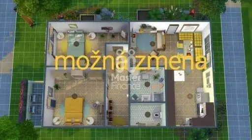
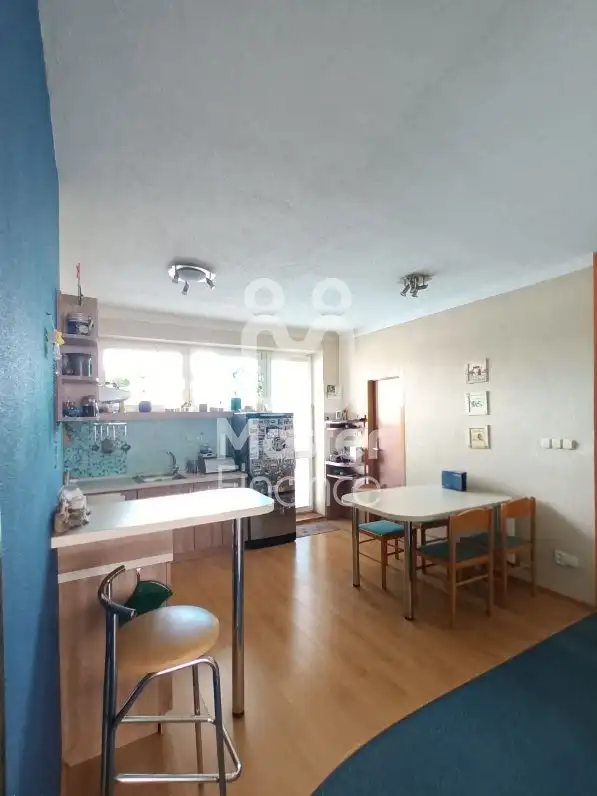
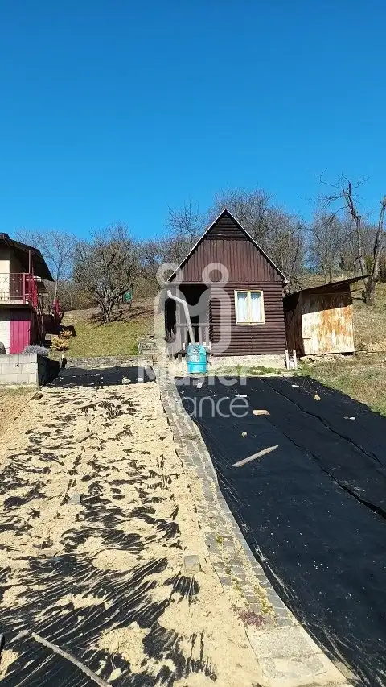
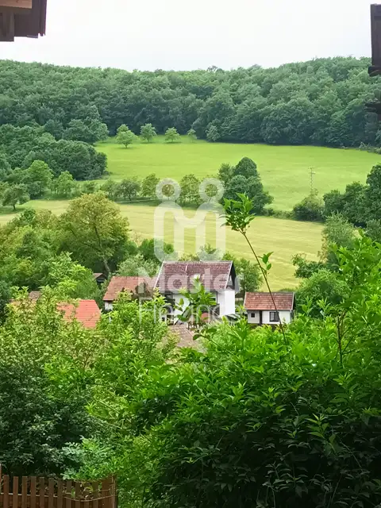
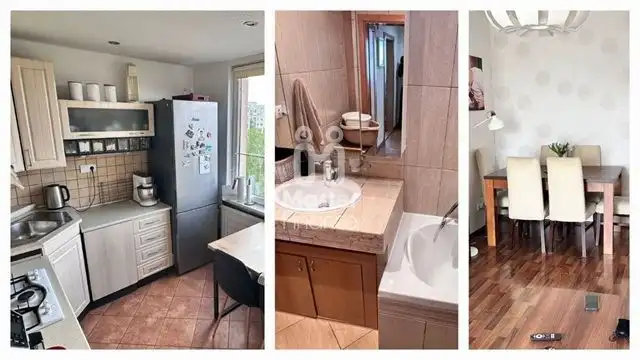

Aktuálna ponuka
Nehnuteľnosti, ktoré ponúkam
5 nehnuteľností na predaj a prenájom. Vyberte typ, alebo napíšte lokalitu.
5 z 5 ponúk

Byt7 69 000 €2 izbový byt 51 m2 s balkónom na predaj Bánovce nad Bebravou Bánovce nad Bebravou 2-izbový51 m²4. podlažie Hľadáte bývanie, ktoré si môžete prerobiť presne podľa vlastných predstáv? Ponúkame na predaj slnečný 2-izbový byt s výbornou dispozíciou a…
BytNové9 139 000 €Veľký 3 izbový byt Bánovce nad Bebravou- na predaj Bánovce nad Bebravou 3-izbový83 m²2. podlažie Ponúkame na predaj priestorovo komfortný 3 izbový byt v Bánovciach nad Bebravou- voľné parkovacie miesta- dve loggie- tri izby, kuchyňa, komora,…
Záhradná chatkaNové10 18 000 €Chatka so záhradou v záhradkárskej osade Bánovce nad Bebravou Bánovce nad Bebravou 15 m² Ponúkame záhradu so záhradnou chatkou v Bánovciach nad Bebravou- predaj- pozemok 471 m2- chatka 15 m2 s úložným priestorom- záhradkárska osada…
PozemokNové10 Cena dohodouPozemky v obci Trebichava- predaj Trebichava 3160 m² Ponúkame súbor pozemkov v obci Trebichava na predaj- pozemky s výlučným vlastníctvom- výmera pozemkov spolu je 3160 m2- so dobovou stavbou- vhodné na…
Byt3 Cena dohodouZariadený 3 i byt Bánovce nad Bebravou- prenájom Bánovce nad Bebravou 3-izbový82 m²5. podlažie Ponúkame do prenájmu veľký 3i byt s výmerou 82 m2 v Bánovciach nad Bebravou- tri izby, kúpeľňa s WC, komora, balkón, šoajza- vybavená kuchyňa-…Tomuto výberu zatiaľ nezodpovedá žiadna ponuka. Napíšte mi, čo hľadáte.